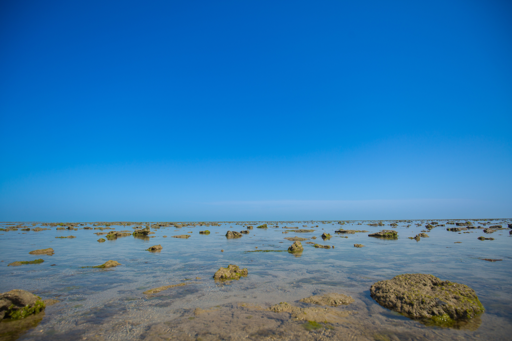
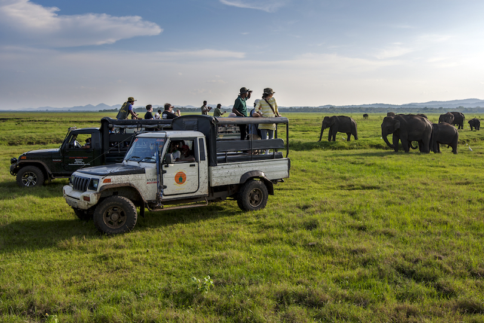
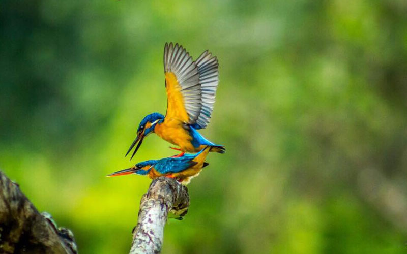
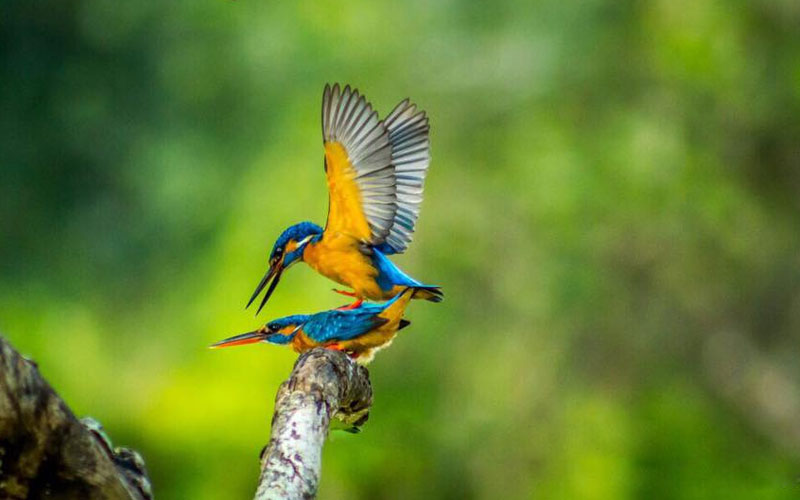
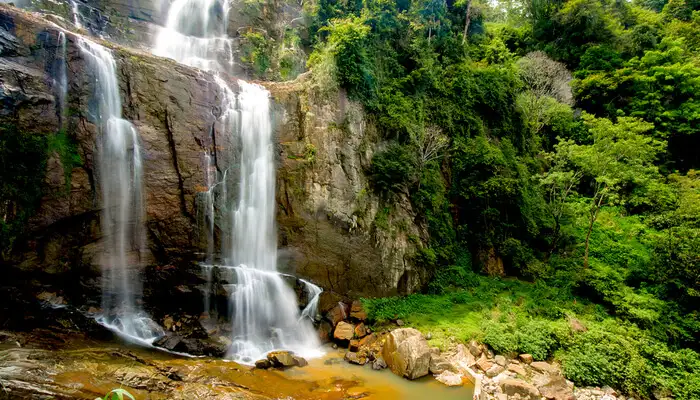

Department Of Wildlife
learn More
Protected Area gallery


 



- The department was formed in October 1949
- They have law enforcement powers under the Fauna and Flora Protection
- The current director of the organization is Chandana Sooriyabandara
- Habitats and the associated biodiversity are protected through a network of Protected Areas.